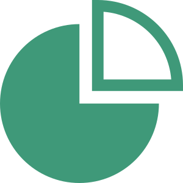

呈現貴校整體與不同分類之學生的教師適配度比例，並與全國學生的適配度比例做比較。 教師適配程度分為非常高、高、中、需考量四個等級。教師適配度代表其工作價值觀與理想教師工作價值觀之間相近的程度，相近程度越高，表示擔任教師適配程度相對越高。


測驗學校：國立彰化師範大學
測驗時程：108.09.01 ~ 109.01.31
測驗人數：247人
呈現貴校整體與不同分類之學生的教師適配度比例，並與全國學生的適配度比例做比較。 教師適配程度分為非常高、高、中、需考量四個等級。教師適配度代表其工作價值觀與理想教師工作價值觀之間相近的程度，相近程度越高，表示擔任教師適配程度相對越高。
國立臺灣師範大學心測中心 版權所有‧翻印必究
不同性別之適配度比例圖示
不同年級之適配度比例圖示

有無修習教程之適配度比例圖示
國立臺灣師範大學心測中心 版權所有‧翻印必究

測驗各向度與不同年級類別之分析結果
國立臺灣師範大學心測中心 版權所有‧翻印必究
呈現不同分類之受測者在所有向度當中，個別向度得分最高的比例。三個分類分別為男性學生、女性學生、以及全國受測學生常模。例如在常模中，有6.8%之學生在「專業自我實現」向度的得分為最高，代表有6.8%的學生在所有工作價值觀中，最重視「專業自我實現」向度。
國立臺灣師範大學心測中心 版權所有‧翻印必究
呈現不同分類之受測者在所有向度當中，個別向度得分最高的比例。三個分類分別為男性學生、女性學生、以及全國受測學生常模。例如在常模中，有6.8%之學生在「專業自我實現」向度的得分為最高，代表有6.8%的學生在所有工作價值觀中，最重視「專業自我實現」向度。
全國之測驗各向度綜合結果
國立臺灣師範大學心測中心 版權所有‧翻印必究
「全國平均得分」圖表呈現全國學生在各向度的平均得分。平均得分介於0~4分之間。 若平均得分越高，代表學生在面對該向度的情境時，多數的選擇是資深教師認為的較佳做法。 若平均得分越低，代表學生在面對該向度的情境時，多數的選擇是資深教師認為的較差做法。 在前述全校的圖表中，可比較貴校與全國的平均得分差異，亦可比較不同學生類別下的平均得分與全國的平均得分差異。
「全國平均得分PR值」圖表呈現全國學生在各向度平均得分的PR值 (百分等級)。 若PR值為50，代表在該向度的平均得分勝過所有受測學生中百分之50的人。因此，PR值越高，代表平均得分高於多數受測學生；PR值越低，代表平均得分只高於少數受測學生。 以「班級經營」向度為例，其平均得分的PR值為47，代表在100位受測學生之中，該向度的平均得分勝過47位受測學生。
「各向度PR值對應分數」圖表呈現全國學生在各向度特定PR值 (百分等級)的對應得分，可以看出所有受測學生在各向度得分的分布情形。 以「班級經營」向度為例，PR值為25及75的得分分別為2.67及3.22，代表所有受測學生中百分之50的人，其得分介於2.67與3.22之間。 在前述全校的圖表中，可比較貴校的平均得分與其他PR值對應得分的差距，亦可比較不同學生類別下的平均得分與其他PR值對應得分的差距。
國立臺灣師範大學心測中心 版權所有‧翻印必究